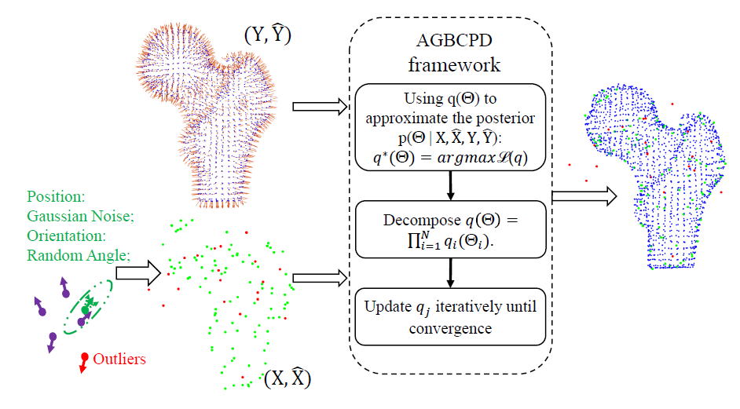
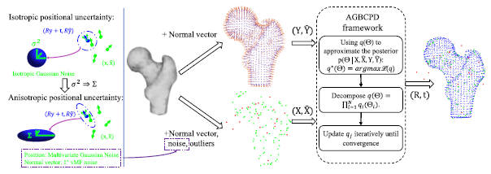
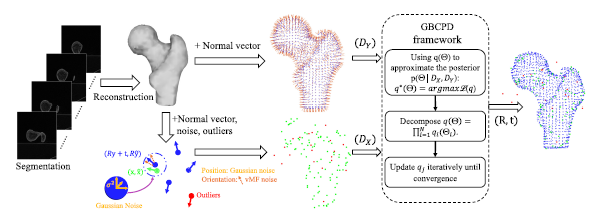
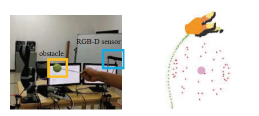
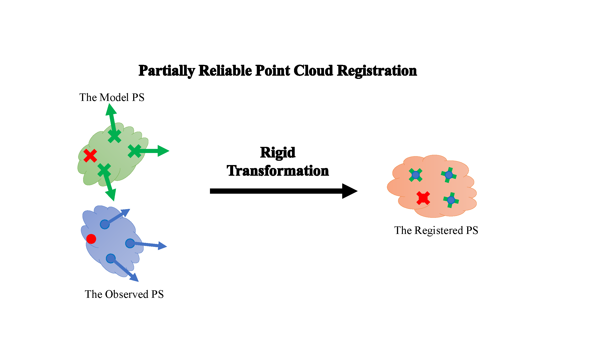

|
|
Zhengyan Zhang
Ph.D. Student
Department of Land Surveying and Geo-Informatics
The Hong Kong Polytechnic University
Email: zzyrobot [at] 163.com


|
Short Bio
Research Interests
- LiDAR-based SLAM, Point Cloud Registration, Scene Understanding, Mobile Mapping System
|
Publications
|

|
Generalized 3D Rigid Point Set Registration with Anisotropic Positional Error Based on Bayesian Coherent Point Drift.
Ang Zhang, Zhe Min, Xing Yang, Zhengyan Zhang, Jin Pan, Max Q-H Meng.
International Conference on Robotics and Automation, (ICRA), 2022.
[paper]
|
|

|
Anisotropic Generalized Bayesian Coherent Point Drift for Point Set Registration.
Ang Zhang, Zhe Min, Zhengyan Zhang, Xing Yang, Max Q-H Meng.
IEEE Transactions on Automation Science and Engineering, (T-ASE), 2022.
[paper]
|
|

|
Generalized Point Set Registration with Fuzzy Correspondences Based on Variational Bayesian Inference.
Ang Zhang, Zhe Min, Zhengyan Zhang, Max Q-H Meng.
IEEE Transactions on Fuzzy Systems, 2022.
[paper]
|
|

|
Towards Components-of-Interest Feedback Control and State Estimation of Robotic Manipulator.
Erli Lyu, Zhengyan Zhang, Jiaole Wang, Shuang Song, Max Q-H Meng.
IEEE International Conference on Robotics and Biomimetics, (ROBIO), 2021.
[paper]
|

|
Towards Tracking by 2D-target Registration for Surgical Optical Tracking System.
Tinghua Zhang*, Zhengyan Zhang*, Botao Lin, Junnan Xue, Jiaole Wang, Shuang Song
IEEE International Conference on Robotics and Biomimetics, (ROBIO), 2021.
[paper]
|
|

|
Reliable Hybrid Mixture Model for Generalized Point Set Registration.
Zhengyan Zhang*, Zhe Min*, Ang Zhang, Jiaole Wang, Shuang Song, Max Q-H Meng
IEEE Transactions on Instrumentation and Measurement, (T-IM), 2021.
[paper]
|
Awards
- PolyU Research Postgraduate Scholarship, 2023.
- Excellent Student, from Harbin Institute of Technology, 2022.
- National Scholarship (Top 1%), from the ministry of Education of China, 2021.
- Excellent Student Leader (Top 5%), from Harbin Institute of Technology, 2021.
- First-class Scholarship, from Harbin Institute of Technology, 2020,2021.
- First-class Scholarship, from Nanjing Tech University, 2017,2018,2019.
- National Second Prize, Award on China Robotics Skills Competition, 2018.
- Third Place, Award on Undergraduate Robotics Competition in Jiangsu Province, 2018.
|
Services
- Reviewer of IEEE Robotics and Automation Letters (RA-L).
- Reviewer of IROS 2022.
- Session chair of ICRA 2021.
- Trainee Engineer of China Instrument and Control Society, 2019.
|
|